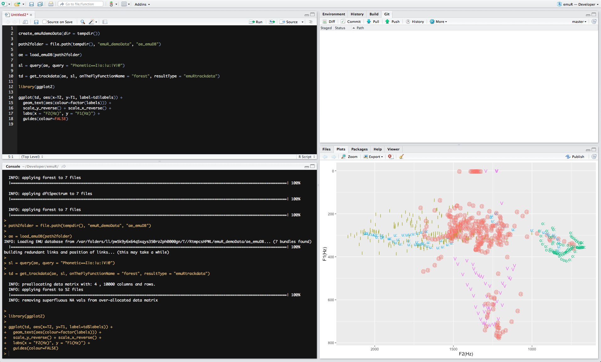
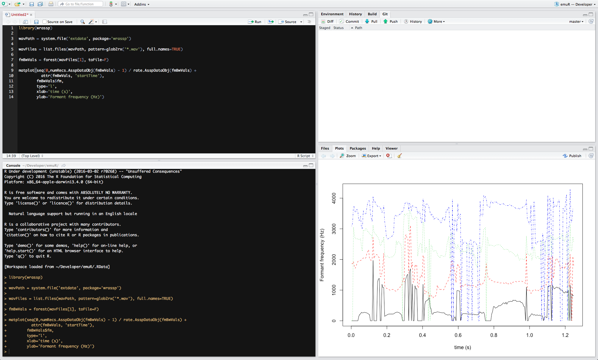

EMU is a collection of software tools for the creation, manipulation and analysis of speech databases. At the core of EMU is a database search engine which allows the researcher to find various speech segments based on the sequential and hierarchical structure of the utterances in which they occur. EMU utilizes the EMU-webApp as an interactive labeler which can display spectrograms and other speech waveforms, and which allows the creation of hierarchical, as well as sequential, labels for a speech utterance.
Due to several maintainability and other issues of the old EMU system, we made the decision to reimplement the legacy EMU_SDMS almost from scratch. In doing so we tried to keep most of the concepts of the legacy system in place while improving on things like usability, maintainability, scalability, stability, speed and more.
The core of the new system is based in the R language for statistical computing. We have developed two R packages (the gray items in the Figure below) that form the core of the new system, one being the wrassp package which handles the speech signal processing and the other handling database manipulation and querying as well as serving as a local websocket server to connect to the EMU-webApp. This infrastructure provides researchers with a self-contained system to query databases, perform signal processing and perform statistical analysis, all within the same environment. Wrassp and the web application are able to be used as part of the new system or separately, as they can function as standalone applications/packages.

As with the legacy EMU system a collection of files on the user's hard drive comprise a local speech database. These files consist of audio files (currently only .wav audio files be supported across all the system's components), SSFF files and text files in the JSON format. The text files will describe the database as well as contain the actual hierarchical and label information. The folder structure of the database will loosely adhere to the structure dbRootFolder → sessions → bundles, where a bundle contains all the files associated with a recorded entity (e.g. an utterance). For more information on the emuDB format see the emuDB vignette of the emuR package.
The wrassp package is responsible for the signal processing. The functions of this package take a list of audio file paths as their main argument and produce SSFF files containing the derived signals (e.g. formant contours / f0 contours/ ...). These files can then be read from the user's hard drive for further analysis. A new feature is the ability not to write the result of a signal processing function back to disc but to return it as an in-memory-object. This feature is utilized by the emuR to do "on the fly" calculations for data extraction queries of SSFF files that have not been precalculated (i.e. that don't exist as files on the user's hard drive). For more information about the wrassp package see the wrassp_intro vignette.
Database queries are handled by emuR. Before querying a database the user has to load the database into memory using a function that the package provides (load_emuDB()). Segment extraction queries can then be run against this object (similar to emu.query()). As in the old system, the result of such a query can then be used to perform a data extraction query (similar to emu.track()). Data extraction can either be performed on precalculated SSFF files or calculated on the fly utilizing the in-memory capability of the wrassp package.
The graphical user interface (GUI) of the EMU_SDMS is a web application called the EMU-webApp that runs entirely in a web browser. To install the webApp the only thing the user has to do is navigate to a specific URL (http://ips-lmu.github.io/EMU-webApp/. Using a HTML5 technology called the application cache the browser intelligently caches the webApp so that the user can renavigate to the same URL, even without network connectivity, enabling online as well as offline usage.
To use the webApp to work on a local database the user has to use the emuR package to load a emuDB into their current R session. This object then has to be passed into a function that starts a local websocket server that runs within R. Now the user simply has to point the webApp to the websocket server URL (e.g. ws://localhost:8080) using the connect button of the GUI. Once this connection is established the local database is displayed by the EMU-webApp.
The EMU-webApp is an online and offline web application for labeling, visualizing and correcting speech and derived speech data. A screenshot of the web application can be seen below.

The main Package of the EMU_SDMS provides the next iteration of the EMU Speech Database Management System (EMU_SDMS) with database management, data extraction, data preparation and data visualization facilities. A screenshot of it in action can be seen below.
wrassp is a wrapper for R around Michel Scheffers's libassp (Advanced Speech Signal Processor). The libassp library aims at providing functionality for handling speech signal files in most common audio formats and for performing analyses common in phonetic science/speech science. This includes the calculation of formants, fundamental frequency, root mean square, auto correlation, a variety of spectral analyses, zero crossing rate, filtering etc. This wrapper provides R with a large subset of libassp's signal processing functions and provides them to the user in a (hopefully) user-friendly manner. A screenshot of it in action can be seen below.
The short answer is YES! But you will not be able to work with them directly. We provide a method that is part of the emuR package called convert_legacyEmuDB() that converts existing EMU databases to the new emuDB format.
As with the old EMU databases we provide methods for converting .TextGrid and .wav file collections to the new database format.
Currently the new system as a whole only supports .wav files. The wrassp package, however, supports a wide range of audio files.
As this is one of the most beneficial and powerful features of the old EMU system, the new system also implements these features.
The annotation files are stored in the JSON file format. These JSON files use links to connect annotational units (called items) to each other. These items are grouped in level arrays specifying the level they belong to.